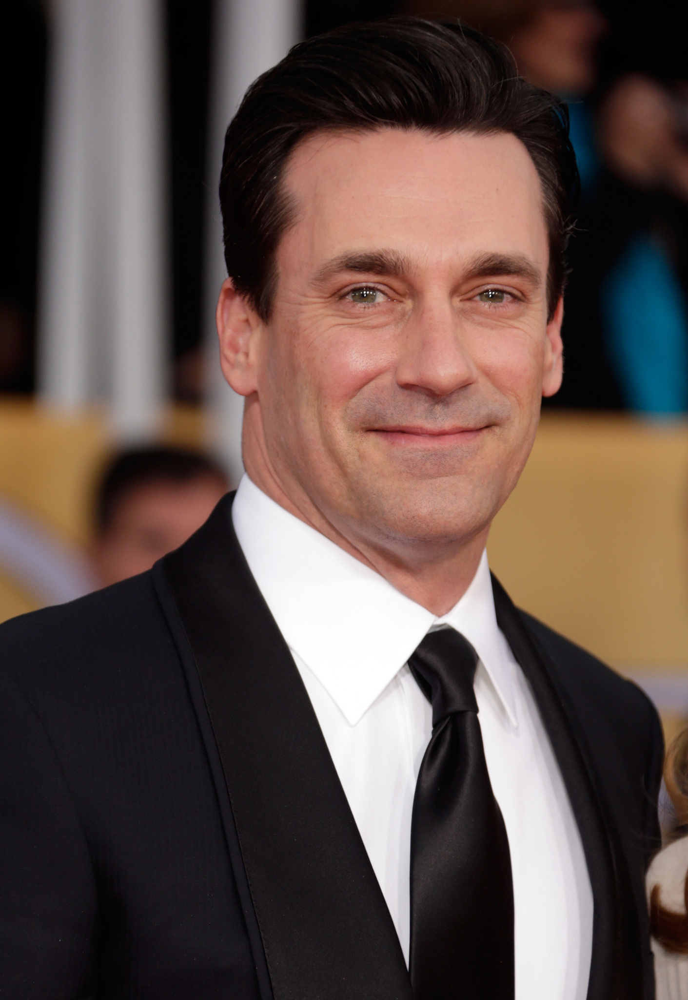

Director: Joseph Kosinski.
Writers: Jim Cash, Jack Epps Jr., Peter Craig.
Director: Joseph Kosinski.
Writers: Jim Cash, Jack Epps Jr., Peter Craig.


Top Gun: Maverick is a 2022 American action drama film directed by Joseph Kosinski and written by Ehren Kruger, Eric Warren Singer, and Christopher McQuarrie from stories by Peter Craig and Justin Marks. The film is a sequel to the 1986 film Top Gun. Tom Cruise reprises his starring role as the naval aviator Maverick. It is based on the characters of the original film created by Jim Cash and Jack Epps Jr. It also stars Miles Teller, Jennifer Connelly, Jon Hamm, Glen Powell, Lewis Pullman, Ed Harris and Val Kilmer, who reprises his role as Iceman. The story involves Maverick confronting his past while training a group of younger Top Gun graduates, including the son of his deceased best friend, for a dangerous mission.
Development of a Top Gun sequel was announced in 2010 by Paramount Pictures. Tom Cruise, along with producer Jerry Bruckheimer and director Tony Scott, were asked to return. Craig wrote a draft of the screenplay in 2012, but the project stalled when Scott died later that year. Top Gun: Maverick was later dedicated to Scott's memory. Production resumed in 2017, after Kosinski was hired to direct. Principal photography, which involved the use of IMAX-certified 6K full-frame cameras, took place from May 2018 to April 2019 in California, Washington and Maryland. It was initially scheduled to be released July 12, 2019, but it was delayed several times due to its complex action sequences and later the COVID-19 pandemic. During the pandemic, several streaming companies attempted to purchase the streaming rights to the film from Paramount, but all offers were declined on the orders of Cruise, who insisted that it be released exclusively in theaters.
Top Gun: Maverick premiered at CinemaCon on April 28, 2022, and was theatrically released by Paramount Pictures in the United States on May 27, 2022. The film was acclaimed by critics, with many calling it better than the original. Top Gun: Maverick was nominated for six awards at the 95th Academy Awards (including Best Picture), winning Best Sound, and received numerous other accolades. The film grossed $1.496 billion worldwide, making it the second-highest-grossing film of 2022 and the highest-grossing of Cruise's career.
 |
Tom Cruise Capt. Pete 'Maverick' Mitchell |
Jennifer Connelly Penny Benjamin |
Miles Teller Lt. Bradley 'Rooster' Bradshaw |
Charles Parnell Adm. Solomon 'Warlock' Bates |
Lewis PullmanLt. Robert 'Bob' Floyd | ||||
| Val Kilmer Adm. Tom 'Iceman' Kazansky |
Bashir Salahuddin CWO4 Bernie 'Hondo' Coleman |
 | Jon Hamm Adm. Beau 'Cyclone' Simpson |
Monica Barbaro Lt. Natasha 'Phoenix' Trace |
Jay Ellis Lt. Reuben 'Payback' Fitch |
This is one of the best theatrical experiences I've had and I'm so happy someone has taken the practical route rather than throwing everyone into a green screen. I watched the first one many times and I can't believe this just topped it by a huge margin. Tom Cruise will be written as the most passionate filmmaker in history. I mean to put a whole cast in a bunch of f-18 jets and act in a jet as well as film yourself is a huge deal. If this movie does not cross a billion then there is something wrong with taste that people have these days. So called marvel fans. This is what you call a cinematic experience. Not some cropped cgi scenes.
In one of the more memorable lines in the original Top Gun, Maverick gets chewed out by a superior who tells him, "Son, your ego's writing checks your body can't cash." Sometimes I wonder if Tom Cruise took that putdown as a personal challenge. No movie star seems to work harder or push himself further than Cruise these days. Ridiculously entertaining Top Gun: Maverick. Cruise was in his early 20s when he first played Pete "Maverick" Mitchell, the cocky young Navy pilot with the aviator sunglasses, the Kawasaki motorcycle and the need for speed. In the sequel, he's as arrogant and insubordinate as ever: Now a Navy test pilot in his late 50s, Maverick still knows how to tick off his superiors, as we see in an exciting opening sequence where he pushes a new plane beyond its limits. Partly as punishment, he's ordered to return to TOPGUN, the elite pilot-training school, and train its best and brightest for an impossibly dangerous new mission.
I was reluctantly dragged into the theater, thinking that they didn't need to make a Top Gun 2 and that the first one was where that story needed to end. I could write a couple paragraphs to summarize my feelings after walking out of the theater, but I'm going to leave it with just one sentence. I was wrong.
| Budget | Gross US & Canada |
|---|---|
| $170,000,000 (estimated) | $718,732,821 |
| Opening weekend US & Canada | Gross worldwide |
| $126,707,459May - 29, 2022 | $1,495,696,292 |
| Runtime | 2 hours 10 minutes | ||||
|---|---|---|---|---|---|
| Color | Color | ||||
| Sound mix | Dolby Atmos | Auro 11.1 | IMAX 6-Track | 12-Track Digital Sound | Sonics-DDP |